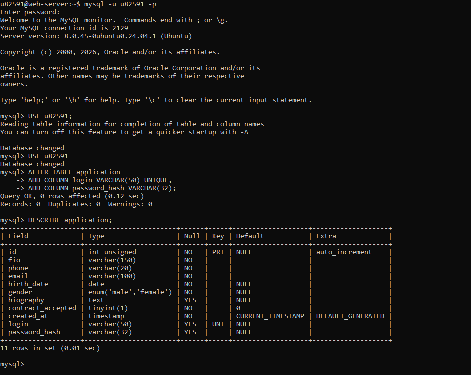
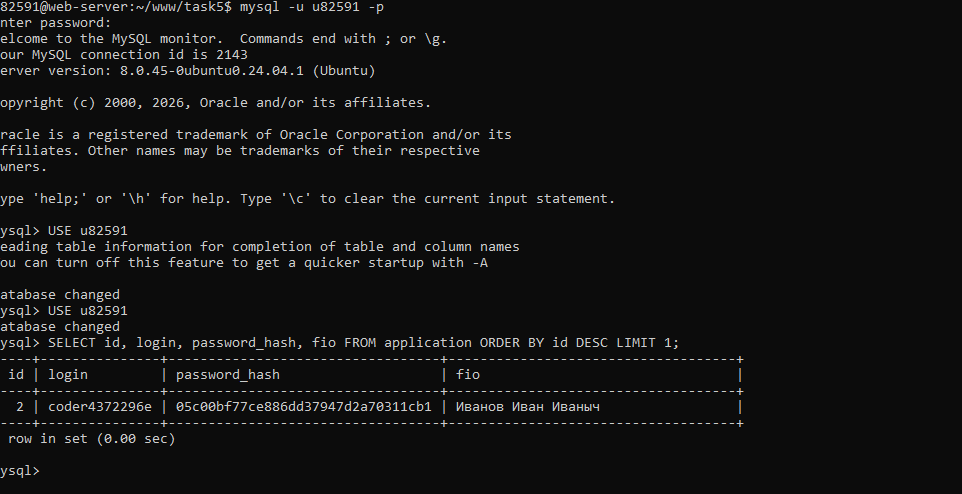
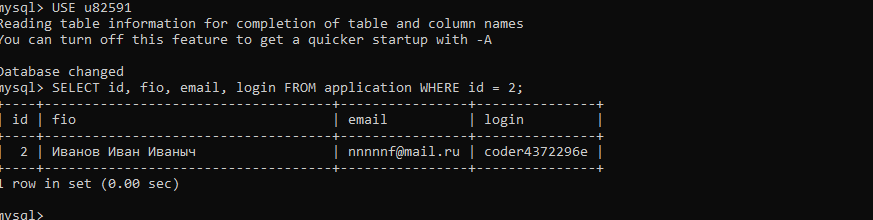
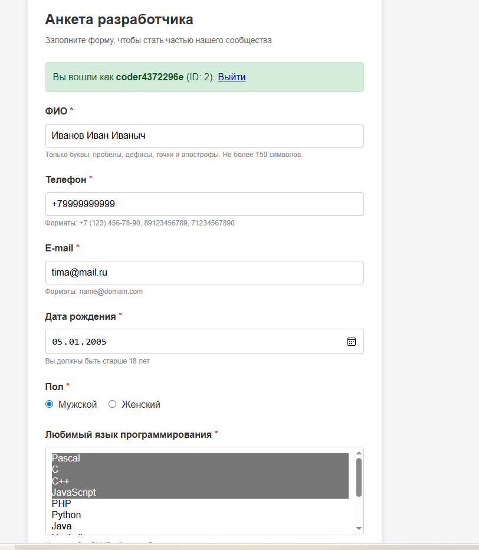
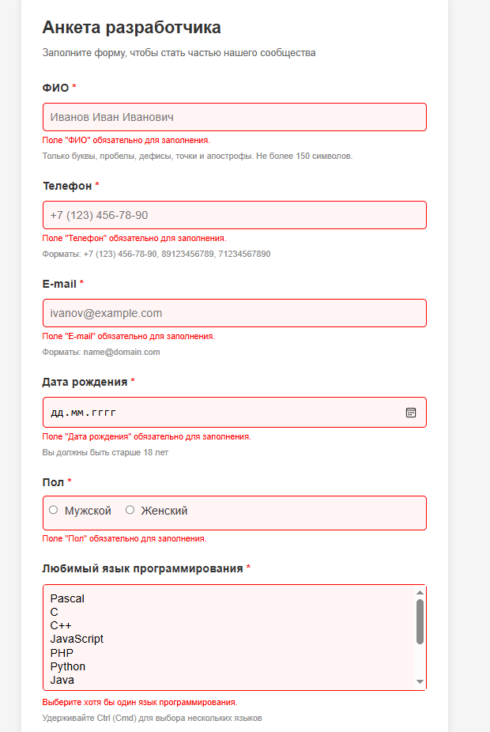
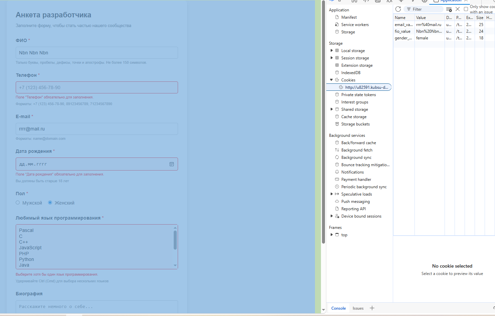
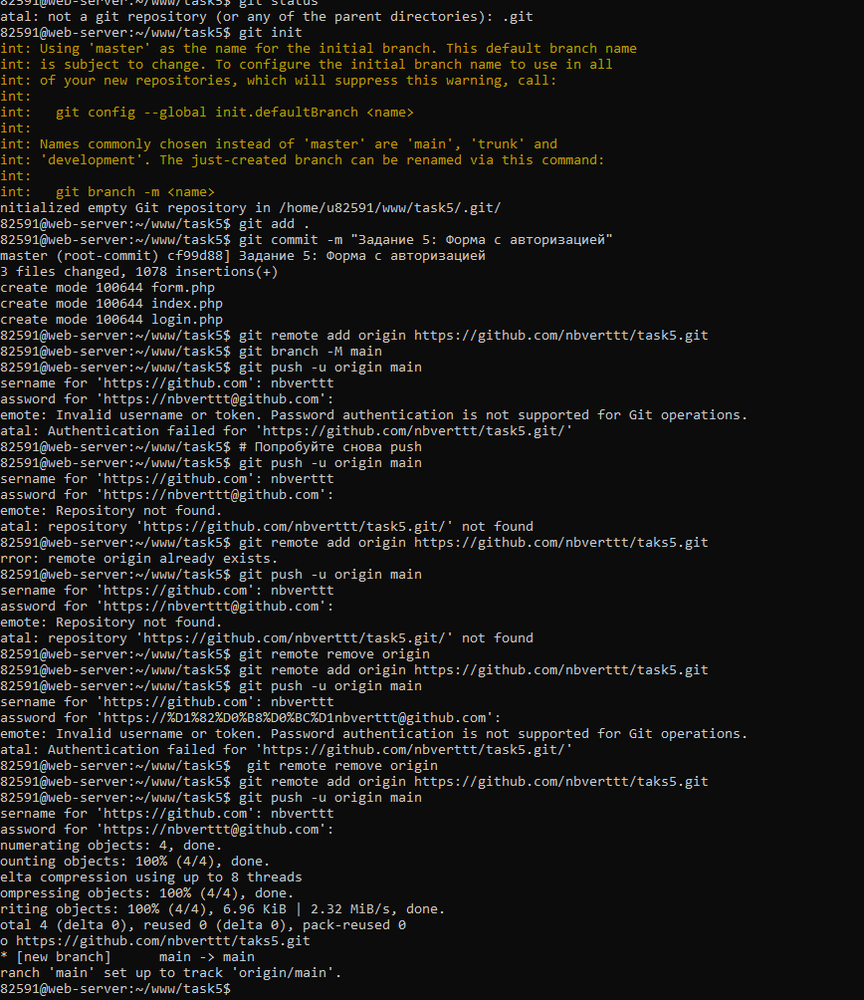

🎯 Цель задания: Реализовать возможность входа с паролем и логином с использованием сессии для изменения отправленных данных. Пароль и логин генерируются автоматически при первоначальной отправке формы.
1
Добавление полей login и password_hash в базу данных
Первым делом нужно модифицировать структуру таблицы application, добавив поля для хранения логина и хеша пароля.
Выполненные действия:
- Подключился к MySQL через SSH:
mysql -u u82591 -p - Выбрал базу данных:
USE u82591; - Добавил поля командой:
ALTER TABLE application ADD COLUMN login VARCHAR(50) UNIQUE, ADD COLUMN password_hash VARCHAR(32); - Проверил структуру таблицы:
DESCRIBE application;
✅ Результат: Поля
login (уникальное, до 50 символов) и password_hash (32 символа для MD5) успешно добавлены.

Скриншот 1: Процесс добавления полей login и password_hash в таблицу application
2
Проверка структуры базы данных
После добавления полей необходимо убедиться, что структура таблицы правильная.
Проверяем:
- Поле
loginимеет тип VARCHAR(50) и ключ UNI (уникальный) - Поле
password_hashимеет тип VARCHAR(32) - Все остальные поля на месте (fio, phone, email, birth_date, gender, biography, contract_accepted)
✅ Результат: Структура БД соответствует требованиям. 11 полей, включая новые login и password_hash.
Скриншот 1 (нижняя часть): Результат DESCRIBE application - все поля на месте
3
Первая отправка формы и генерация логина/пароля
При первой отправке формы происходит:
- Валидация всех полей формы
- Генерация уникального логина (функция
generate_login()) - Генерация случайного пароля (функция
generate_password()) - Хеширование пароля через
md5() - Сохранение всех данных в БД
- Отображение логина и пароля пользователю один раз
✅ Результат: Сгенерирован логин
coder4372296e и пароль. Данные сохранены в БД с ID=2.

Скриншот 3: Проверка в БД - логин и хеш пароля сохранены
4
Проверка сохранённых данных в базе данных
Проверяем, что данные корректно сохранились:
SELECT id, fio, email, login FROM application WHERE id = 2;- ID: 2
- ФИО: Иванов Иван Иваныч
- Email: nnnnnf@mail.ru
- Логин: coder4372296e
✅ Результат: Все данные корректно сохранены в БД.

Скриншот 5: Запрос SELECT показывает сохранённые данные
5
Вход в систему (авторизация)
После получения логина и пароля, пользователь может войти для редактирования данных:
- Переход на страницу
login.php - Ввод логина и пароля
- Проверка через БД: сравнение хеша пароля
- Создание сессии:
$_SESSION['login']и$_SESSION['uid'] - Перенаправление на главную форму с загруженными данными
✅ Результат: Успешный вход. Отображается сообщение "Вы вошли как coder4372296e (ID: 2)".

Скриншот 4: Форма после авторизации - все поля заполнены данными из БД
6
Валидация формы с ошибками
Проверка работы валидации как для неавторизованных, так и для авторизованных пользователей:
- Пустые поля подсвечиваются красной рамкой
- Сообщения об ошибках выводятся под каждым полем
- Правильно заполненные поля сохраняют свои значения
- Данные сохраняются в Cookies для неавторизованных пользователей
⚠️ Важно: Валидация работает одинаково при создании новой записи и при редактировании существующей.

Скриншот 6: Форма с ошибками валидации - поля подсвечены красным
7
Работа с Cookies
Для неавторизованных пользователей данные формы сохраняются в Cookies:
fio_value,phone_value,email_value- значения полейfio_error,phone_error- флаги ошибокfio_error_msg- текст сообщения об ошибке- Срок хранения: 30 дней для значений, 24 часа для ошибок
✅ Результат: Cookies корректно сохраняются. При повторном открытии формы данные восстанавливаются.

Скриншот 7: DevTools браузера - Cookies с данными формы
8
Работа с Git и отправка на GitHub
Создание репозитория и отправка кода на GitHub:
- Инициализация Git:
git init - Добавление файлов:
git add . - Создание коммита:
git commit -m "Задание 5: Форма с авторизацией" - Привязка к удалённому репозиторию:
git remote add origin https://github.com/nbverttt/task5.git - Отправка на GitHub:
git push -u origin main
✅ Результат: Код успешно загружен на GitHub.

Скриншот 8: Процесс отправки кода на GitHub